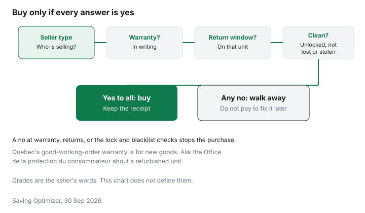

Technology · Canada
Refurbished Phones and Laptops in Canada: Grades, Warranties and What to Check
Refurbished means someone says the device was checked, and sometimes repaired, before it was sold again. Who that someone is, and what they put in writing, is the whole decision. This page does not rank manufacturers, carriers, retailers or marketplace sellers. It also does not quote a typical discount. An open-box return is a different label, on the open-box guide. Selling the phone you already own is on the trade-in guide.
Disclosure: Refurbished retailer offers are an offer type. Saving Optimizer may earn a commission if a partner link is added later. No partnership is claimed. An offer link does not change a grade, a battery reading or a warranty. Education only.
Key takeaways
- Manufacturer-certified, retailer or carrier refurbished, a marketplace seller, and a private sale are four different promises. Read the warranty and the return window for the one in front of you.
- Grades are the seller's words. Ask what the grade means for cosmetics, battery and accessories. This page does not define a national grade scale.
- A CRTC news release dated 15 June 2017 says that from 1 December 2017 new devices are provided unlocked and existing devices are unlocked free on request. Confirm the current rule with the CRTC, and still test the phone.
- Quebec's warranty of good working order, on quebec.ca, is for new goods from 5 October 2026. For refurbished, check the Office de la protection du consommateur.
- A price that looks far too low is the pattern the Canadian Anti-Fraud Centre flags on merchandise ads. Walk away rather than ship money for a device you have not seen work.
Manufacturer-certified vs retailer vs marketplace refurbished
A manufacturer-certified unit is sold with that maker's own refurbished terms. Read them. A retailer or carrier refurbished unit is that store's program, which can be a return they inspected or a unit they repaired. A marketplace seller can be a business or a person using the marketplace's checkout, and the warranty may be the seller's, the marketplace's, or neither. A private sale is the thinnest of the four: you are relying on what the person will put in a message.
The used-goods guide is the household version of the same split. Electronics add a lock screen, a blacklist and a battery. None of the four seller types is ranked here. The column that matters is what you can read before you pay.
| Seller | Warranty and return window | Battery disclosure | Where to check |
|---|---|---|---|
| Manufacturer-certified | Check the seller. Use the maker's refurbished terms for that model | Check the seller. Ask for a health or cycle figure in writing | The maker's refurbished page and the receipt |
| Retailer or carrier refurbished | Check the seller. Do not assume it matches a new-in-box unit | Check the seller | The retailer's refurbished terms, not the new-product page only |
| Marketplace seller | Check the seller and the marketplace's own promise, if any | Check the seller. A photo of a health screen is better than a grade word | The listing, the seller's returns page, and your card receipt |
| Private sale | Only what you agree in writing. Often none | Ask to see the health screen before you pay | In person, with the phone powered on. See the fraud notes below |
Grades and battery condition
Grade letters feel standard, and they are not. Ask the seller to translate the grade into scratches, battery health, and missing pieces such as a charger or a stylus. A battery that holds a charge for your day is the spec that makes a cheap phone expensive six months later. If the listing will not show a battery-health screen or a cycle count, you do not have a battery fact. You have a adjective.
For a laptop, ask the same question about the battery and about the storage. A refurbished laptop can be a different configuration from the name on the series. Match RAM and storage to the task list on the laptop spec guide before you compare the price with a new doorbuster.
Warranty and return window
Write the warranty length and who honours it, the maker or the seller, and the return window in days from the seller's page. This guide does not quote those days. A store plan sold on top is the subject of the extended-warranty guide. Pay for it only after you know the written warranty you already have.
Quebec's warranty of good working order is the one people will mention at the counter. Checked 29 Sep 2026, quebec.ca applies it to new goods bought or leased from a merchant from 5 October 2026. A refurbished or used device is not what that page describes. Check the Office de la protection du consommateur. A different rule, the availability of parts, repair services and repair information, can apply to a used good bought from a merchant. The Office's repair page, checked 29 Sep 2026, says the good may be new or used. That is not the same as a 3-year or 4-year good-working-order term. The Quebec warranty guide keeps the new-goods explanation in one place.
Unlock and blacklist checks
A phone you cannot move to your carrier is not a bargain. The CRTC's news release of 15 June 2017 says that, as of 1 December 2017, newly purchased devices must be provided unlocked, and existing devices are unlocked free of charge on request. Confirm the current rule with the CRTC. A refurbished unit sold outside a carrier can still be locked, reported lost, or sitting behind an activation lock. Power it on. Remove the seller's account in front of you, or do not pay. Place a call on your own SIM if the seller will allow it.
Checked 29 Sep 2026, Get Cyber Safe says that if your own phone goes missing, the service provider can place it on a national blacklist so it will not work on a Canadian wireless network. That is the seller's problem if the phone you are buying was someone else's missing phone. Ask your carrier whether they can check the device before you pay. This guide does not name a public lookup site. The Canadian Anti-Fraud Centre's merchandise page says a price that is too good to be true is a rule of thumb, and it warns that fraudsters use classifieds and resale sites. Checked 29 Sep 2026.

Holiday timing
Refurbished stock moves when new models arrive and when gifts come back in January. Black Friday is Friday 27 November 2026 and Boxing Day is Saturday 26 December 2026. Those dates are not a promise that a refurbished price will be lower, and a holiday return window may be shorter on a refurbished unit than on a sealed one. Check the seller. The tech timing guide is the calendar for new devices. Use it only after this checklist is done.
Checklist
| Check | What good looks like | If you cannot confirm it |
|---|---|---|
| Unlocked | The phone accepts your carrier, or the seller's page says unlocked and you have tested it | Do not pay on a promise to unlock it later |
| Not reported lost or stolen | Your carrier has no block, if they will check, and a call goes through | Walk away |
| Activation lock off | The seller's account is removed while you watch | Walk away. A reset you cannot finish is their account, not your phone |
| Battery health | A health or cycle figure in the listing or on the screen | Price the device as if the battery is unknown |
| Charger and accessories | The listing says what is in the box | Add a charger to your own total. Check the seller for the price |
| Receipt | A receipt that names the seller, the model and the warranty | A private sale with no paper is harder to unwind |
Sources & date stamps
- CRTC news release, 15 June 2017, on canada.ca. As of 1 December 2017, new devices must be provided unlocked, and existing devices are unlocked free of charge on request. Confirm the current rule with the CRTC.
- Canadian Anti-Fraud Centre, merchandise frauds, checked 29 Sep 2026. Classifieds and resale sites are named channels. If the price is too good to be true, treat it that way.
- Get Cyber Safe, phones and tablets, checked 29 Sep 2026. A provider can place a missing phone on a national blacklist.
- Quebec, Garantie de bon fonctionnement, checked 29 Sep 2026. New goods from a merchant from 5 October 2026. Office de la protection du consommateur repair page, checked 29 Sep 2026: parts, repair services and repair information, and the good may be new or used.
Frequently asked questions
Is it worth buying a refurbished phone in Canada?
It can be worth it when the seller puts the grade, the battery condition, the warranty and the return window in writing, and when you confirm the phone is unlocked and not reported lost or stolen. This page does not rank sellers and does not quote a typical saving. A price that is far below every other listing is a reason to slow down, which is the Canadian Anti-Fraud Centre's rule of thumb on merchandise that looks too cheap.
What's the difference between refurbished grades?
Grades are the seller's labels, not a national scale. One seller's top grade can mean a different amount of wear from another's. Ask what the grade covers: screen, body, battery health, and which accessories are in the box. If the page does not define the grade, treat the word as unfinished and check the seller.
What warranty comes with refurbished tech?
Whatever the seller or the manufacturer writes down for that unit, plus any return window on the same page. This guide does not quote a day count. A manufacturer-certified unit and a marketplace listing are not the same promise. In Quebec, the warranty of good working order described on quebec.ca is for new goods, so ask the Office de la protection du consommateur before you assume a refurbished unit has it.
How do I check a used phone isn't stolen or locked?
Confirm the phone is unlocked, that any activation lock is off, and that the seller can show you it powers on and places a call. Get Cyber Safe says a provider can place a missing phone on a national blacklist so it will not work on a Canadian wireless network. Ask your carrier whether they can check an identifier before you pay, and do not meet a private seller only to ship the phone unseen.
Does Quebec's new warranty cover refurbished devices?
The warranty of good working order on quebec.ca applies to new goods bought or leased from a merchant from 5 October 2026, not to a used good as that page describes it. A separate availability rule for parts and repair information can cover a used good bought from a merchant. Check the Office de la protection du consommateur for a refurbished phone or laptop before you rely on either warranty.
Researched and drafted with AI assistance and fact-checked against official Canadian sources. How we create content.